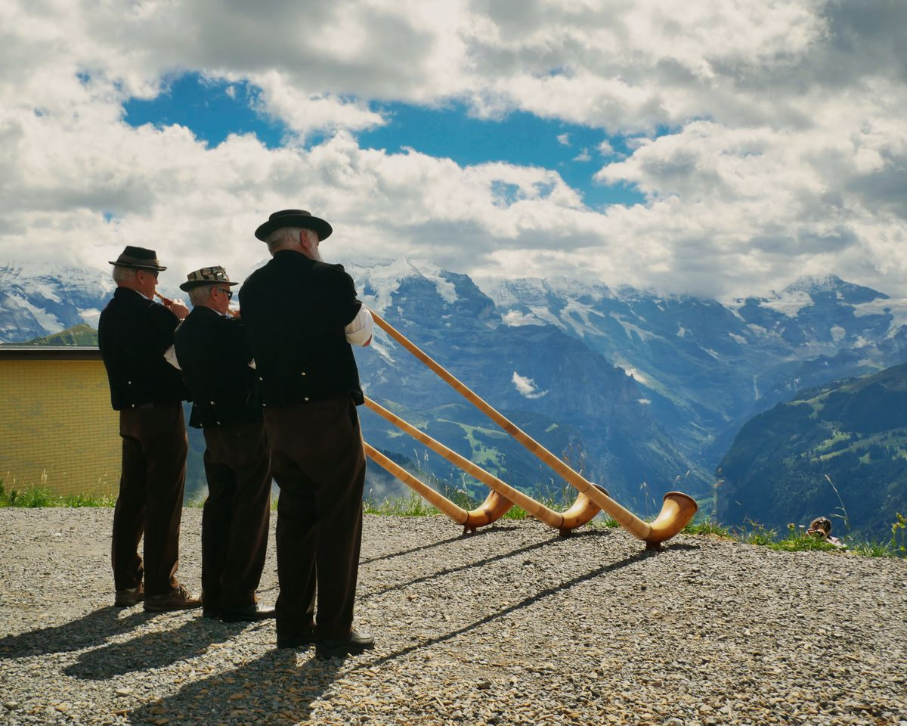

Adjudication · Eidgenössisches Jodlerfest, Zug · June 2023
Out of the third class
The ask
The club had been classified Klasse 3 at the federal festival in Brig in 2017 and had sung the same safe set ever since. The committee's ask was blunt: get us out of the third class, or hand the stick to someone who can.
What we did
Two seasons of intonation work before anything else. The second voices tuned their thirds against a single lead voice until the intervals rang instead of landing; every dynamic in the set was marked, rehearsed and then — hardest of all — obeyed. We dropped the showpiece the audience loved and took a quiet Naturjodel instead, ending almost at a whisper, because a jury can hear courage and a crowd-pleaser is not it.
The outcome
Klasse 1 — the jury's top class — with the report praising the intonation of the harmony rows and the quiet ending. Six years of third class ended in eleven minutes of singing. The certificate hangs in the hall; the report hangs next to it, because the report is the part that teaches.
“Kaspar took a choir that had stood in the third class for a decade and taught us to hear our own thirds. In Zug the jury wrote one sentence I still have framed: ‘the quiet ending was the bravest thing we heard all weekend.’”
